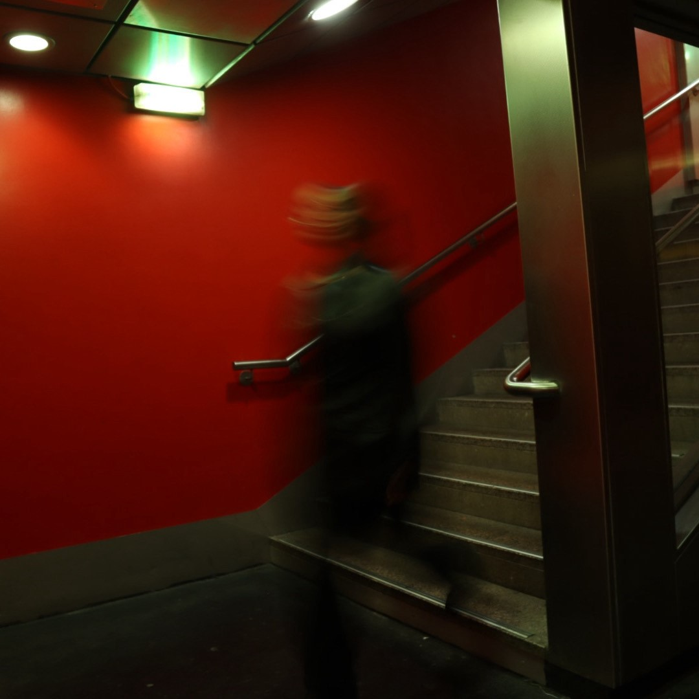

My work

Most of the time I took portrait. I love to play with the exposing time of my camera in order to create different type of blur. Whether it's my subject, the background, or me moving the camera, I like to find new way to create a blurry effect. In my work you will most of the time find deep contrast and saturated colors. You can see a lot of red in my photos but I also work with a more yellow/green colorimetry and an increase of the iso of my camera settings with the intention of creating a sort of vintage effect. I want in the future to work more with the adobe pack. Indeed, I think it gives a lot of place to creativity. Here on the left side a picture I have modified with such tools. The other part of my work are pictures of my environment. I love to draw attention on outstanding landscape, or small details whether it is in an architecture or in a landscape.
